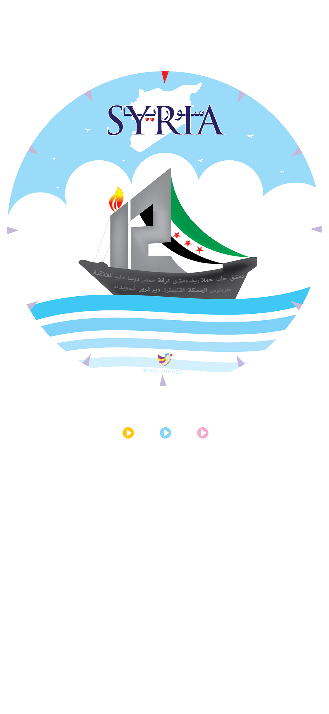

<audio id="syriaday" src="syriaday.mp3" preload="auto"></audio>
<audio id="syriaday1" src="syriaday1.mp3" preload="auto"></audio>
<audio id="syriaday2" src="syriaday2.mp3" preload="auto"></audio>


<script>

    function syriaday() {
        var audio = document.getElementById("syriaday");

        if (audio.duration > 0 && !audio.paused) {
            audio.pause();
            audio.currentTime = 0;
        } else {
            audio.play();
        }
    }

function syriaday1() {
        var audio = document.getElementById("syriaday1");

        if (audio.duration > 0 && !audio.paused) {
            audio.pause();
            audio.currentTime = 0;
        } else {
            audio.play();
        }
    }


function syriaday2() {
        var audio = document.getElementById("syriaday2");

        if (audio.duration > 0 && !audio.paused) {
            audio.pause();
            audio.currentTime = 0;
        } else {
            audio.play();
        }
    }

</script>


<map name="image-map">

    <area target="_blank" alt="" title="" href="" onclick="javascript:syriaday(); return false;"coords="377,1421,496,1524" shape="rect">
           <area target="_blank" alt="" title="" href="" onclick="javascript:syriaday1(); return false;"coords="625,1535,510,1418" shape="rect">
    <area target="_blank" alt="" title="" href="" onclick="javascript:syriaday2(); return false;"coords="639,1415,761,1538" shape="rect">

        
  
  </map>
